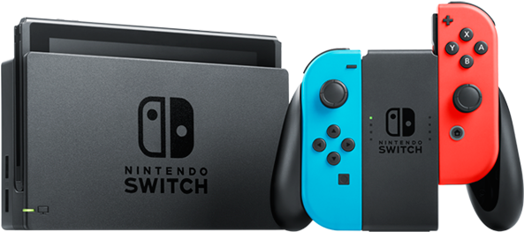

La Nintendo Switch è una delle console più popolari al mondo. Ecco una lista dei migliori giochi disponibili.
| Posizione | Gioco | Genere |
|---|---|---|
| 1 | The Legend of Zelda: Breath of the Wild | Avventura |
| 2 | Super Mario Odyssey | Platform |
| 3 | Mario Kart 8 Deluxe | Racing |
| 4 | Animal Crossing: New Horizons | Simulazione |
| 5 | Super Smash Bros. Ultimate | Picchiaduro |